Day 4: Rapid Prototyping
For the rapid prototyping assignemnt, I have sketched a kinetic sculture and a prototype that I might possibly use as part of my final project. The first image is a design I sketched to visually recognize what components I need and want to include on a movable mini spider. I demonstrated the webs of the spider using paper clips. Several basic components are needed in order to recreate this sketch including 9v battery, cardboard, mini ping pong balls, paper clips, motor, and a fan.
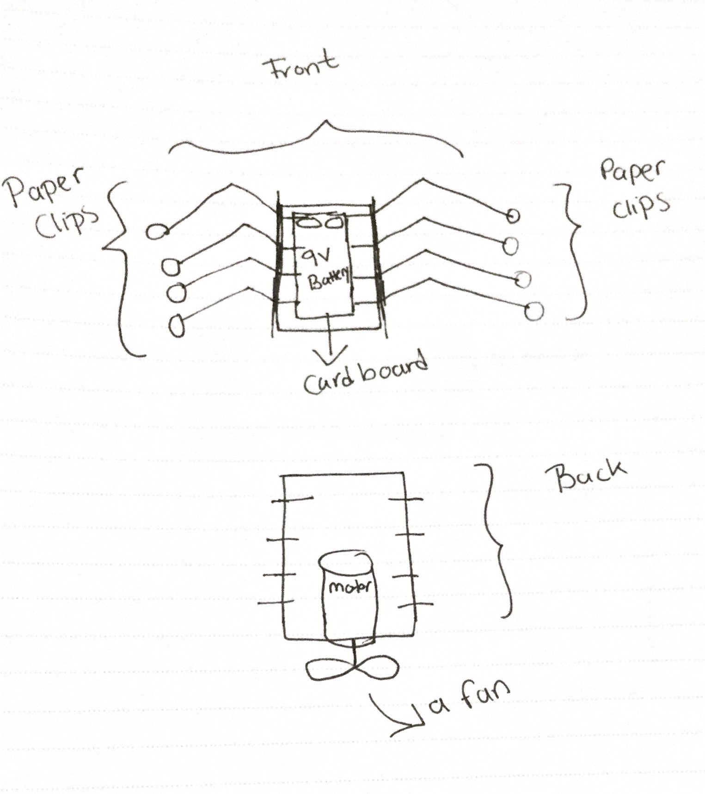Here is a project I did with ultrasonic sensor that was published in Journal for Youths in Science link.
 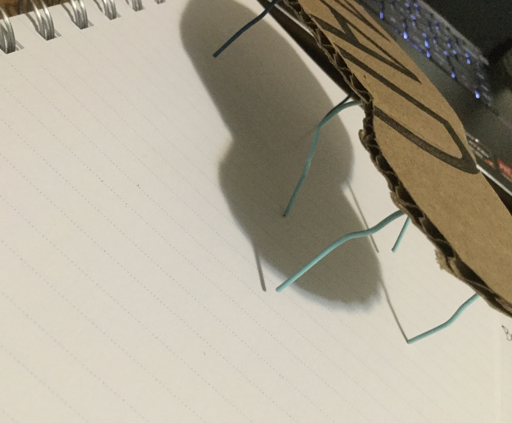
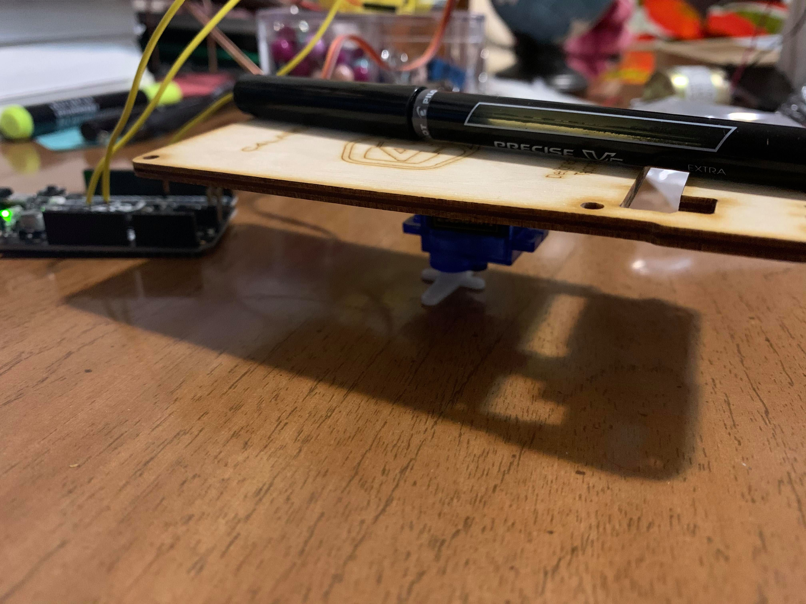
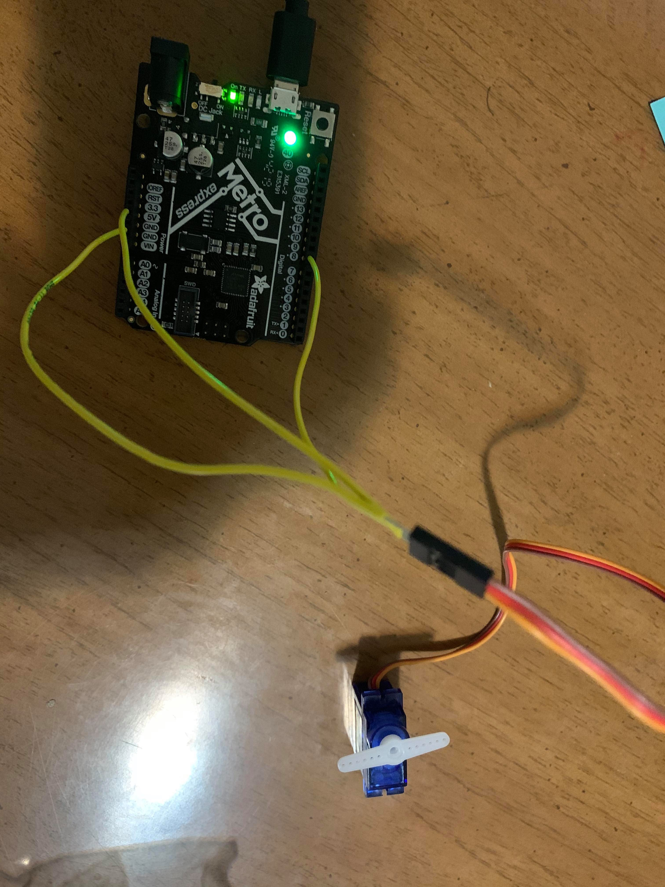
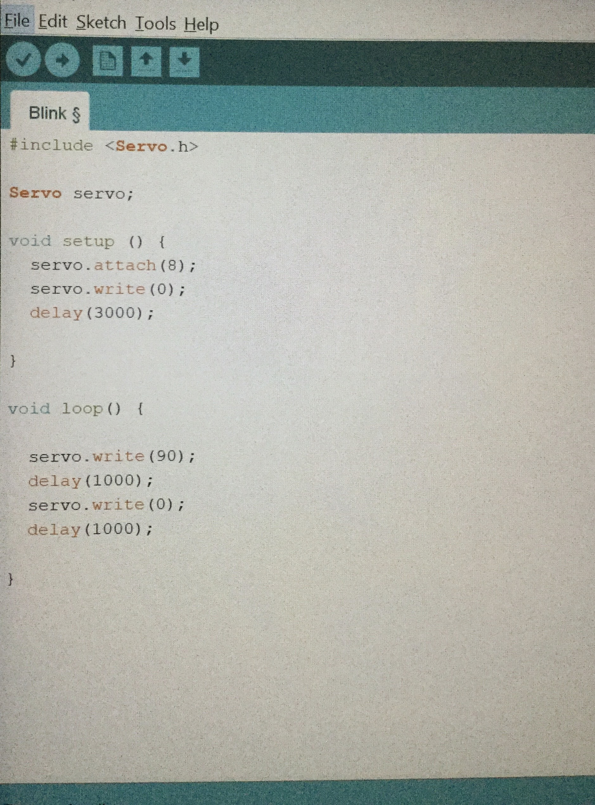
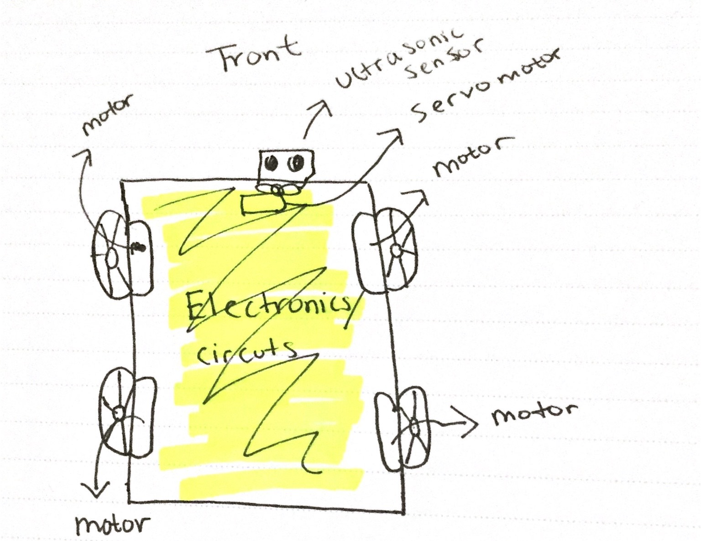
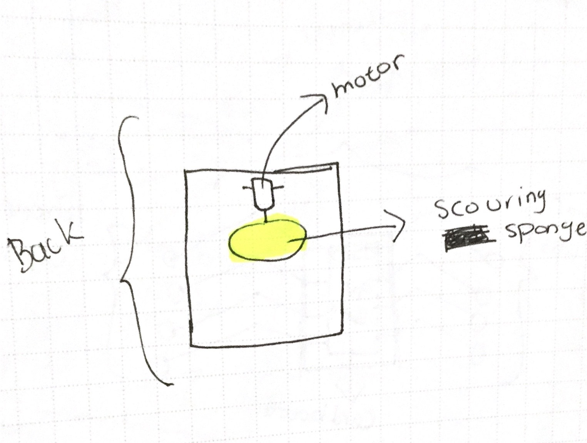
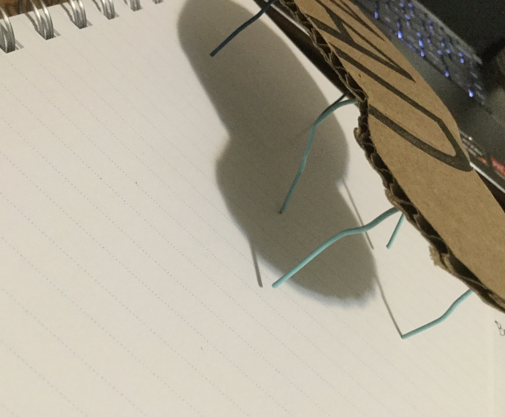
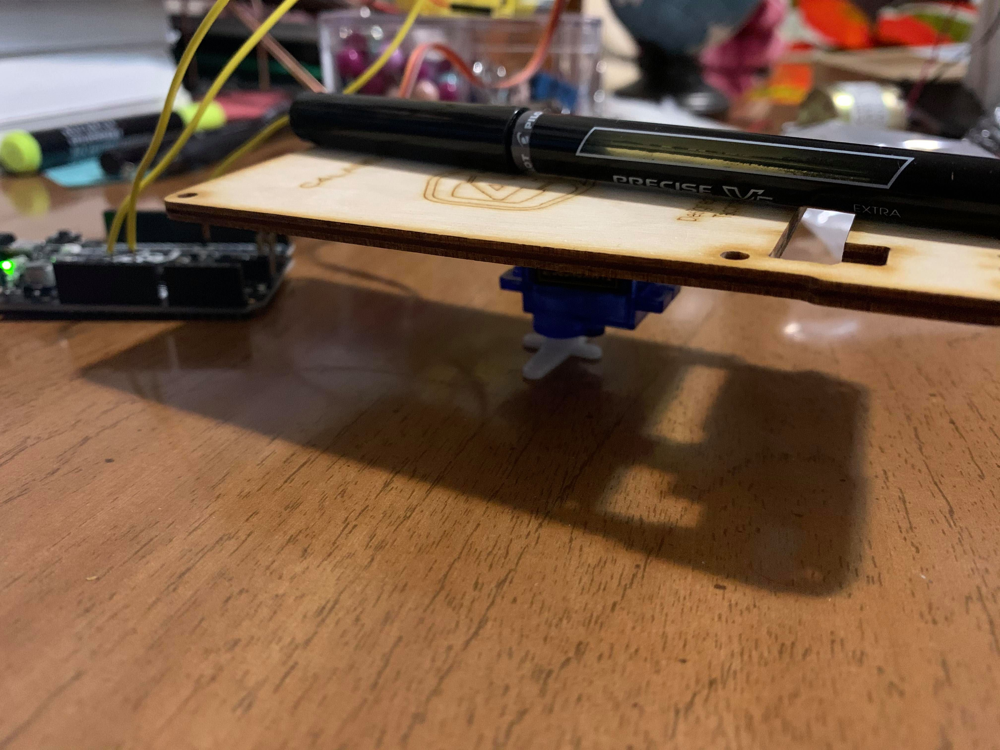
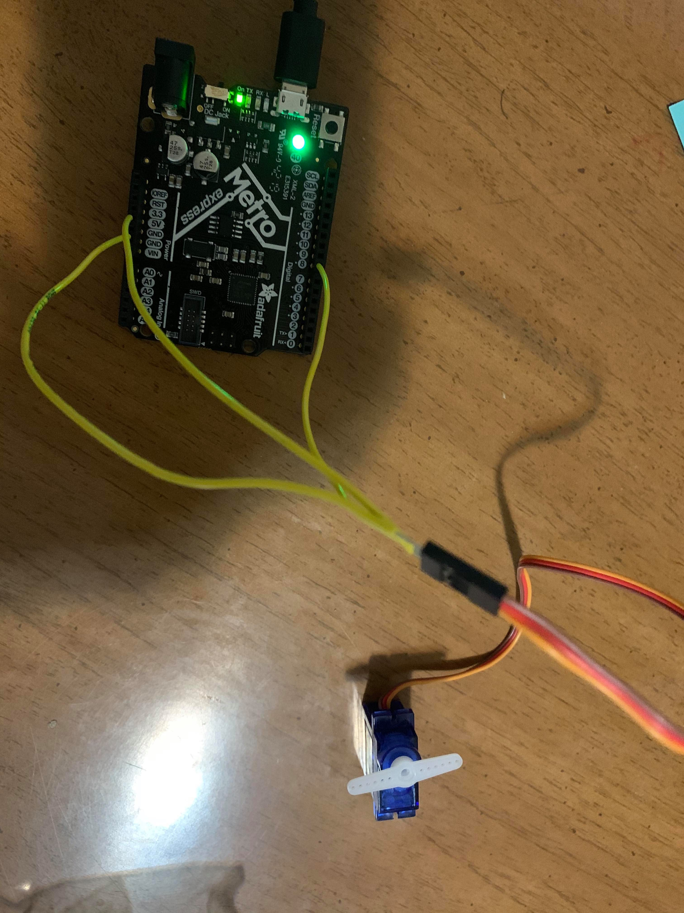
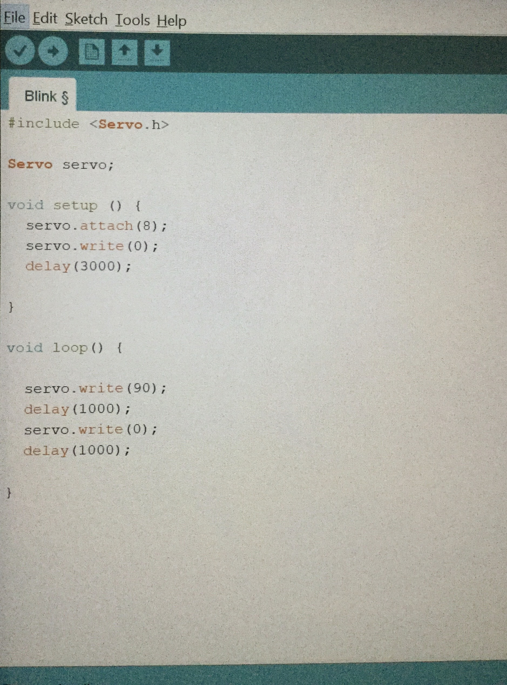
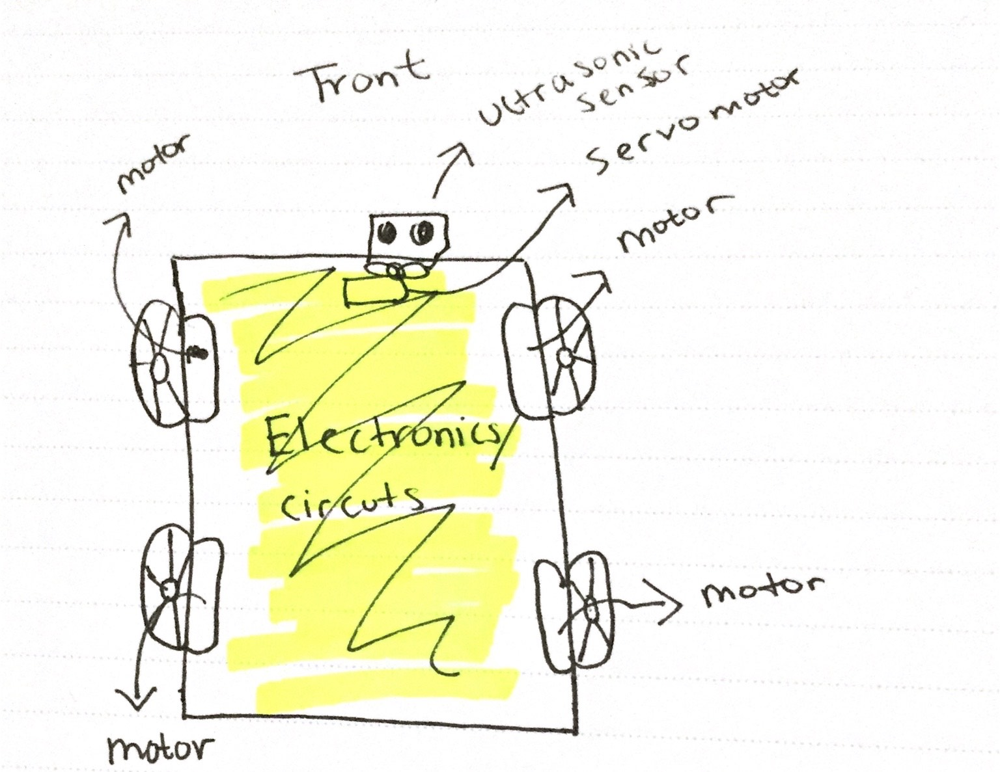
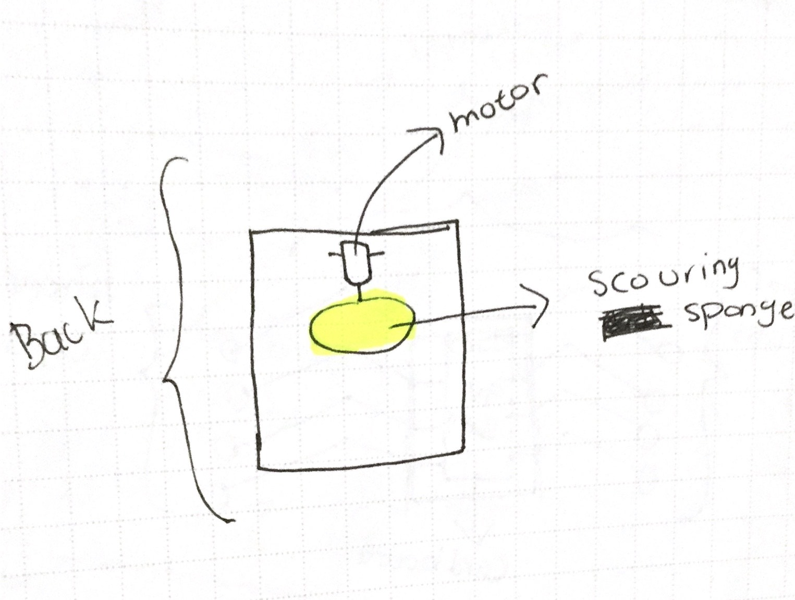
My second circuit design involves LED lighting up from right to left the closer ultrasonic senosr detects an obstacle. For example, if my obstacle is 1 foot away, the first LED from right will light up, and as the obstacle gets closer, the second LED will light up while the first one will not remain.